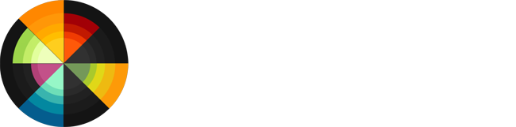

CSS transforms are not supported in your browser
CSS transitions are not supported in your browser
Sorry, only modern browsers.
All Settings
User Modes
Browse All
Install App
Productivity
All Options
User Images
User Videos
Download App
Mobile Theme
Login SYstem
Profile
Click to open